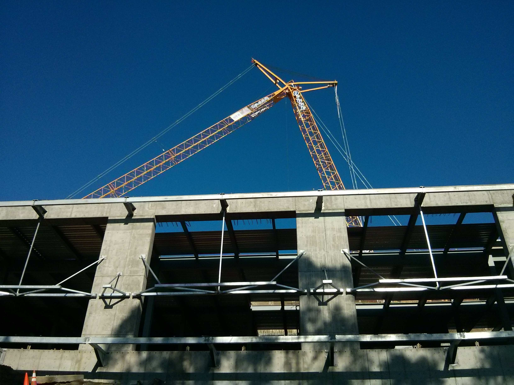
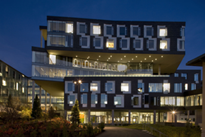

Harsha Vardhan Simhadri
Researcher, Microsoft Research India
Interests
Theoretical and practical aspects of parallel computing,
algorithmic engineering for future platforms,
programming abstractions and systems with an emphasis on scheduling for locality.
Recently, I have been developing tools for
large scale topic models based on SVD
and training supervised learning models for resouce-constrained edge devices.
Preprints
-
GesturePod: Programmable Gesture Recognition for Augmenting Assistive Devices
with Shishir Patil, Don Kurian Dennis, Chirag Pabbaraju, Rajanikant Deshmukh, Manik Varma, Prateek Jain
Publications
-
BLAS-on-flash : An Efficient Alternative for Large Scale ML Training and Inference?
(code)
NSDI'19 (with Suhas Jayaram Subramanya, Srajan Garg, Anil Kag, Venkatesh Balasubramanian)
- Multiple Instance Learning for Efficient Sequential Data Classification on Resource-Constrained Devices
NIPS'18 (with Don Kurian Dennis, Chirag Pabbaraju, Prateek Jain)
- Provably Efficient Scheduling of Dynamically Allocating Programs on Parallel Cache Hierarchies
HiPC '17 (with Guy Blelloch, Phillip Gibbons)
- ProtoNN: Compressed and Accurate kNN for Resource-scarce Devices
(Code)
ICML '17 (with Chirag Gupta, Arun Sai Suggala, Ankit Goyal, Bhargavi Paranjape, Ashish Kumar, Saurabh Goyal, Raghavendra Udupa, Manik Varma, Prateek Jain)
- Extending the Nested Parallel Model to the Nested Dataflow Model with Provably Efficient Schedulers
ACM SPAA'16 (with David Dinh and Yuan Tang)
- Write-Avoiding Algorithms
(poster)
(conference version)
IPDPS '16 (with Erin Carson, James Demmel, Laura Grigori, Nicholas Knight, Penporn Koanantakool and Oded Schwartz)
- Experimental Analysis of Space-Bounded Schedulers
(conference version)
(code)
ACM SPAA '14 (with Guy E. Blelloch, Jeremy T. Fineman, Phillip B. Gibbons and Aapo Kyrola)
Invited to the ACM Transaction on Parallel Computing best papers issue, 2016, 3(1). - Program-Centric Cost Models for Locality
ACM MSPC'13 workshop (with Guy E. Blelloch, Jeremy T. Fineman and Phillip B. Gibbons)
- Brief announcement: the problem based benchmark suite
ACM SPAA '12 (with Julian Shun, Guy E. Blelloch, Jeremy T. Fineman, Phillip B. Gibbons, Aapo Kyrola, and Kanat Tangwongsan)
- Parallel and I/O efficient set covering algorithms
ACM SPAA '12 (with Guy E. Blelloch and Kanat Tangwongsan)
- Scheduling Irregular Parallel Computations on Hierarchical Caches
(Tech Report)
ACM SPAA '11 (with Guy E. Blelloch, Jeremy T. Fineman and Phillip B. Gibbons)
Tech Report: CMU-CS-10-154
- Low Depth Cache Oblivious Algorithms
(conference version)
Tech Report: CMU-CS-09-134 (with Guy E. Blelloch and Phillip B. Gibbons)
ACM SPAA '10 - Combinable Memory-Block Transactions
ACM SPAA '08 (with Guy E. Blelloch and Phillip B. Gibbons)
- Towards optimal and efficient perfectly secure message transmission
Theory of Cryptography Conference 2007 (with Mattias Fitzi, Mathew Franklin and Juan Garay)
Thesis
Program-Centric Cost Models for Locality and Parallelism
Teaching Assistant
Earlier
2013-2016: Postdoctoral Fellow, CS Department, Lawrence Berkeley National Lab.
2007-2013: Ph.D., CS Department, Carnegie Mellon University, Advisor: Guy Blelloch
2003-2007: B.Tech, IIT Madras, Major: CS, Minor: Physics.